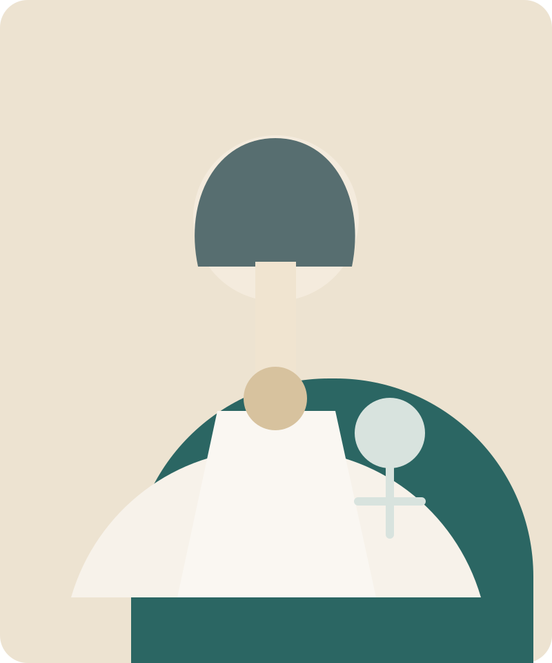
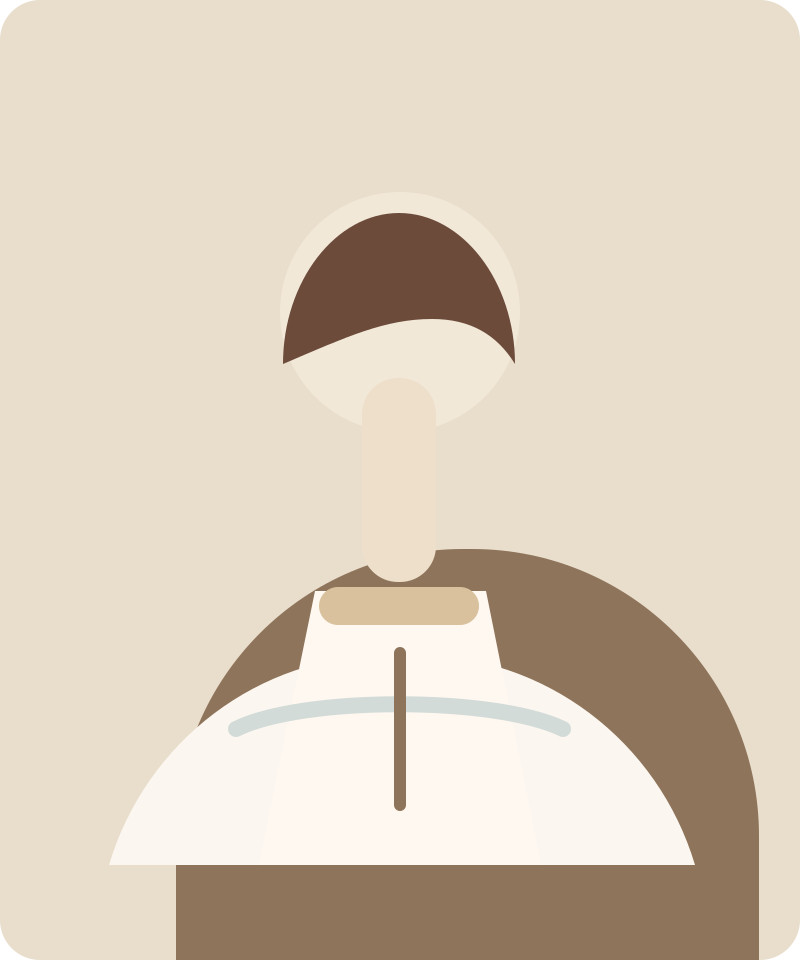
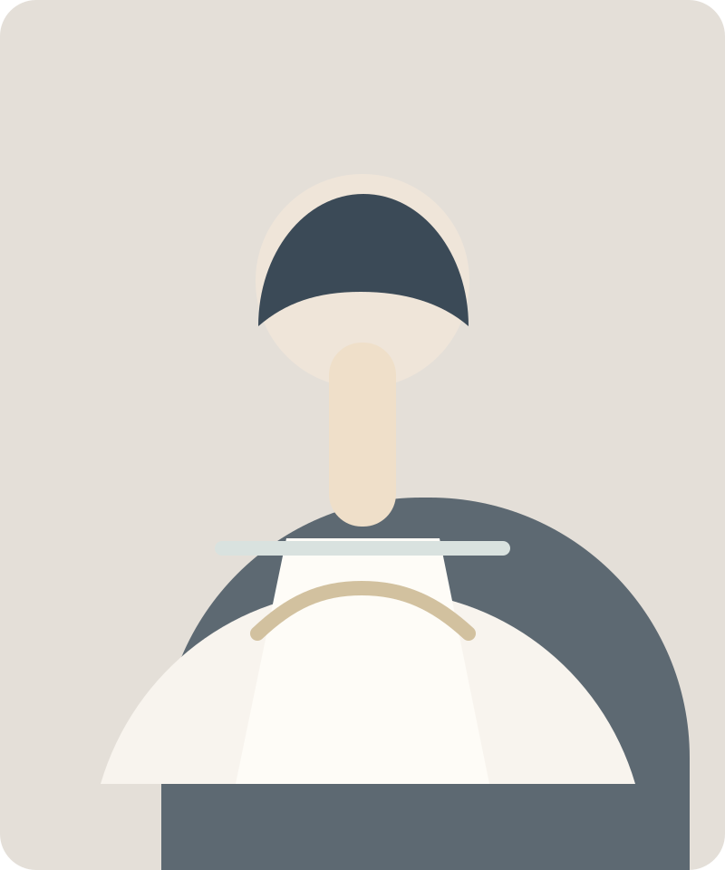

Лицензии и документы
Вся обязательная документация вынесена в понятный и спокойный раздел.
Медицинская реабилитация и экспертная забота
РеаМед+ объединяет реабилитацию, прием специалистов и диагностику в одном понятном и спокойном интерфейсе.
Лицензии и документы
Вся обязательная документация вынесена в понятный и спокойный раздел.
ОМС и амбулаторная помощь
Реабилитация доступна в рамках программы госгарантий.
Команда специалистов
Неврология, восстановительное лечение, психология и диагностика.
Понятная запись
Телефон, форма и маршруты CTA встроены в логику страницы.
Ключевые направления
Пациент быстро понимает, что выбрать: реабилитацию, медицинские услуги или лабораторную диагностику.
01
Программы восстановления после неврологических, травматологических и соматических состояний.
Открыть направление02
Прием профильных специалистов, консультации и комплексное сопровождение пациента.
Посмотреть услуги03
Лабораторная диагностика как часть единого маршрута пациента и лечения.
Уточнить анализыПочему РеаМед+
От консультации к лечению и реабилитации без хаотичного поиска разделов.
Шапка, формы и CTA ведут к действию без агрессивных всплывающих блоков.
Документы и лицензии остаются в фокусе, но не создают шум на первом экране.
Реабилитация в центре внимания
Сайт должен выглядеть так же надежно, как работает клиника: уверенно, современно и без визуального шума.
Специалисты

Врач-невролог
Реабилитационные маршруты и неврологические программы восстановления
Медицинский психолог
Психологическое сопровождение и адаптация пациента в ходе лечения
Врач восстановительной медицины
Комплексные курсы и координация лечебно-реабилитационного процессаПопулярные сценарии
Нужна программа реабилитации, наблюдение специалиста и поэтапное восстановление функций.
Требуется безопасный план восстановления с учетом диагноза и прогресса пациента.
Консультация, анализы, подбор врача и координация следующих шагов.
Повторные приемы, поддерживающая терапия и контроль состояния в одном центре.
Доверие и репутация
“На сайте сразу видно, что клиника серьезная: документы, направления и запись собраны в одной логике.”
Пациентка курса реабилитации“Удобно, что прием, анализы и консультации не раскиданы по разным разделам, а ведут к понятному действию.”
Повторный пациент центраДокументы и прозрачность
Запись
Форма задумана как CMS-friendly блок, который можно связать с текущим сайтом, CRM или логикой обратного звонка.
FAQ
Да, для этого сохранен отдельный trust-блок и страница документов с условиями программы госгарантий.
Главная и форма записи подсказывают понятный первый шаг: выбрать причину обращения и получить помощь администратора.
Обязательные документы выделены в отдельный раздел и продублированы в подвале сайта.